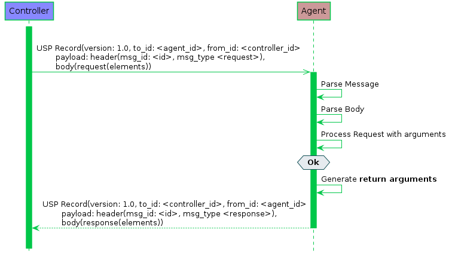

Figure 2 – A failed request/response sequence
Figure 2 – A failed request/response sequenceNote: This version of the specification defines its messages in Protocol Buffers v3. This part of the specification may change to a more generic description (normative and non-normative) if further encodings are specified in future versions.
These sections describes the types of USP messages and the normative requirements for their flow and operation. USP messages are described in a protocol buffers schema, and the normative requirements for the individual elements of the schema are outlined below:
USP contains messages to create, read, update, and delete Objects, perform Object-defined operations, and allow agents to notify controllers of events. This is often referred to as CRUD with the addition of O (operate) and N (notify), or CRUD-ON.
The three types of USP messages are Request, Response, and Error.
A request is a message sent from a source USP endpoint to a target USP endpoint that includes elements to be processed and returns a response or error. Unless otherwise specified, all requests have an associated response. Though the majority of requests are made from a Controller to an Agent, the Notify message follows the same format as a request but is sent from an Agent to a Controller.
R-MSG.0 – The target USP endpoint MUST respond to a request message from the source USP endpoint with either a response message or error message, unless otherwise specified (see Operate and Notify messages).
R-MSG.1 – The target USP endpoint MUST ignore or send an error message in response to messages it does not understand.
R-MSG.2 – When the target USP endpoint is not required to send a response, the MTP endpoint that received the message MUST gracefully end the MTP message exchange. How the MTP gracefully ends the MTP message exchange is dependent on the type of MTP.
Circumstances may arise (such as multiple Message Transfer Protocols) that cause duplicate messages (those with an identical message ID) to arrive at the target USP endpoint.
R-MSG.3 – If a target USP endpoint receives a message with a duplicate message ID before it has processed and sent a Response or Error to the original message, it MUST gracefully ignore the duplicate message.
For messages that require no response, it is up to the target endpoint implementation when to allow the same message ID to be re-used by the same source USP endpoint.
Successful request/response: In this successful message sequence, a Controller sends an Agent a request. The message header and body are parsed and the request is processed, and the Agent sends a response with the relevant information in the body.
 Figure 1 – A successful request/response sequence
Failed request/response: In this failed message sequence, a Controller sends an Agent a request. The message header and body are parsed and the request is processed, but throws an error. The error arguments are generated and sent in an error message.
Figure 2 – A failed request/response sequence
A Message consists of a header and body. When using protocol buffers, the elements of the header and body for different messages are defined in a schema and sent in an encoded format from one USP endpoint to another.
R-MSG.4 – A Message MUST conform to the schemas defined in usp.proto.
Note: When using protocol buffers for message encoding, default values (when elements are missing) are described in Protcol Buffers v3.
Every USP message contains a header and a body. The header contains basic destination and coordination information, and is separated to allow security and discovery mechanisms to operate. The body contains the message itself and its arguments.
Each of the message types and elements below are described with the element type according to Protocol Buffers version 3, followed by its name.
Header header
R-MSG.5 – A Message MUST contain exactly one header element.
Body body
The Message Body that must be present in every Message. The Body element contains either a Request, Response, or Error element.
R-MSG.6 – A Message MUST contain exactly one body element.
The message header contains information on source and target of the message, as well as useful coordination information. Its elements include a message ID, the endpoint identifiers for the source and target endpoints, an optional reply-to identifier, and a field indicating the type of message.
The purpose of the message header is to provide basic information necessary for the target endpoint to process the message.
string msg_id
A locally unique opaque identifier assigned by the Endpoint that generated this message.
R-MSG.7 – The msg_id element MUST be present in every Header.
R-MSG.8 – The msg_id element in the Message Header for a Response or Error that is associated with a Request MUST contain the message ID of the associated request. If the msg_id element in the Response or Error does not contain the message ID of the associated Request, the response or error MUST be ignored.
enum MsgType msg_type
This element contains an enumeration indicating the type of message contained in the message body. It is an enumeration of:
ERROR (0)
GET (1)
GET_RESP (2)
NOTIFY (3)
SET (4)
SET_RESP (5)
OPERATE (6)
OPERATE_RESP (7)
ADD (8)
ADD_RESP (9)
DELETE (10)
DELETE_RESP (11)
GET_OBJECTS (12)
GET_OBJECTS_RESP (13)
NOTIFY_RESP (14)R-MSG.9 – The msg_type element MUST be present in every Header.
string proto_version
The version of the USP protocol.
R-MSG.10 – The proto_version element MUST be present in every Header.
R-MSG.11 – The proto_version element MUST be set to a value of “1.0”.
string to_id
The value of this header argument is the Endpoint Identifier of the target Endpoint.
R-MSG.12 – The to_id element MUST be present in every Header.
R-MSG.13 – The target USP endpoint MUST ignore any message that does not contain its own Endpoint Identifier.
string from_id
The value of this header argument is the Endpoint Identifier of the source Endpoint.
R-MSG.14 – The from_id element MUST be present in every Header.
string reply_to_id
The value of this header argument is the Endpoint Identifier to which responses associated with this message should be targeted.
R-MSG.15 – The reply_to_id MAY be used to send Response or Error to a USP Endpoint other than the from-to-id in the Request.
Note: The reply-to endpoint should have prior knowledge of the message and can expect the Response or Error.
R-MSG.16 – The Source Endpoint MUST ignore a Response or Error message from a Target Endpoint when the Source Endpoint does not expect the Response or Error.
Note: The reply-to endpoint should have prior knowledge of the message and can expect the Response.
R-MSG.17 – The reply_to_id element is optional, and MUST NOT be present in a Message that contains either a Response or Error in the Body element.
R-MSG.18 – If the reply_to_id is omitted from a Message that contains a Request in the Body element, the response or Error MUST be sent to the Endpoint identified in the from_id element in the request’s Header element.
The message body contains the intended message and the appropriate elements for the message type.
Every message body contains exactly one message and its elements. When an Agent is the target endpoint, these messages can be used to create, read, update, and delete Objects, or execute Object-defined operations. When a Controller is the target endpoint, the message will contain a notification, response, or an error.
oneof msg_body
This element contains one of the types given below.
Request request
This element indicates that the Message contains a request of a type given in the Request Message.
Response response
This element indicates that the Message contains a response of a type given in the Response Message.
Error error
This element indicates that the Message contains an Error Message.
oneof req_type
This element contains one of the types given below. Each indicates that the Message contains a Message of the given type.
Get get
GetObjects get_Objects
Set set
Add add
Delete delete
Operate operate
Notify notifyoneof resp_type
This element contains one of the types given below. Each indicates that the Message contains a Message of the given type.
GetResp get_resp
GetObjectsResp get_objects_resp
SetResp set_resp
AddResp add_resp
DeleteResp delete_resp
OperateResp operate_resp
NotifyResp notify_resp fixed32 err_code
This element contains a numeric code indicating the type of error that caused the overall message to fail.
string err_msg
This element contains additional information about the reason behind the error.
repeated ParamError param_err_list
This element is present in an Error Message in response to an Add or Set message when the allow_partial element is false and detailed error information is available for each Object or parameter that have caused the message to report an Error.
string param_path
This element contains a Path Name to the Object or parameter that caused the error.
fixed32 err_code
This element contains a numeric code indicating the type of error that caused the message to fail.
string err_msg
This element contains additional information about the reason behind the error.
The Add, Set, and Delete requests are used to create, configure and remove Objects that comprise Service Elements.
An Agent’s current state and capabilities are represented in its data model. The current state is referred to as its Instantiated Data Model, while the data model that represents its set of capabilities is referred to as its Supported Data Model. Messages exist to retrieve data from both the instantiated and Supported Data Models.
A Controller that wishes to learn the current state of an Agent usually wants to know one of two things: the current object instances that exist (and their unique keys for use in addressing), or the actual state of the Objects and Parameters represented by the Agent. These are handled by the GetInstances message, and the Get message, respectively.
USP allows an Agent to specify which Objects, Parameters, Commands, and Events it supports in its Supported Data Model. The GetSupportedDM message allows a Controller to retrieve information about the Supported Data Model as part of a USP message. While the Device Type documents and the definitions therein still hold, this message lets the Controller and Agent synchronize on the Supported Data Model as part of USP operation.
A Controller can use the Subscription mechanism to subscribe to certain events that occur on the Agent, such as a parameter change, Object removal, wake-up, etc. When such event conditions are met, the Agent sends a Notify message to the Controller.
Additional methods (operations) are and can be defined in the USP data model. Operations are generally defined on an Object, using the “command” attribute, as defined in TR-106. The mechanism is controlled using the Operate message in conjunction with the Multi-Instance Request Object.